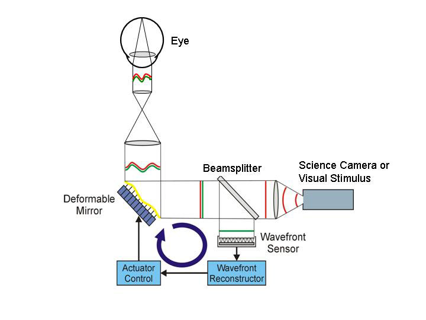
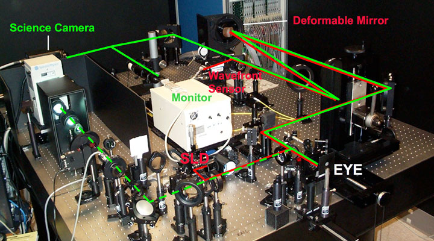
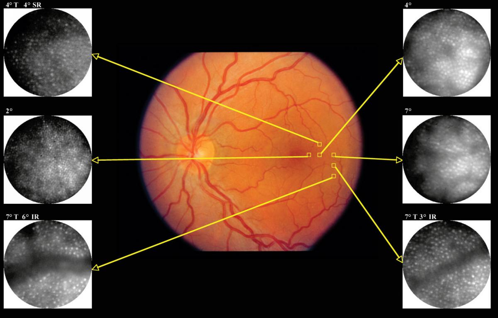

Ophthalmic Imaging and Psychophysics Using Adaptive Optics
We have developed an optical system in collaboration with the Lawrence Livermore National Laboratory and Iris AO that is designed to correct the eye’s optical aberrations including the temporally-varying higher-order aberrations. This instrument permits imaging of the human retina at the cellular scale and allows vision science experiments that are free from distortions due to the eye’s optics. The instrument employs adaptive optics (AO), a technology originally conceived for use in astronomical imaging, to compensate for varying aberrations in optical systems. Compensation for the imperfections of the optics of the eye, allows in vivo retinal imaging with unprecedented resolution and contrast.
Background
Conventional optical systems consist of pre-formed, essentially static lenses and other optical elements. Light rays from an object are focused to form an image by selection of the appropriate lens elements and viewing distance. Adaptive optics (AO) allows for greater precision in the focal quality of the optical system. AO also provides for rapid compensation for changes in the object position or in the refractive medium between the object and the optical system. In astronomical applications, the ability of the AO system to accurately measure and correct the rapidly changing atmospheric conditions is critical. This is the basis for the high level of resolution possible with telescope systems such as the Keck telescope, which uses adaptive optics developed at the Lawrence Livermore National Laboratory (LLNL).
The imperfections in an optical system are generally characterized by a wavefront error function, which quantifies the deviation of a wavefront (or bundle of light rays) from a perfect or planar wavefront. The essential elements of an AO system are a wavefront sensor, which measures the wavefront error function for a system, and a wavefront corrector, to compensate the shape of the wavefront based on input from the wavefront error function. The classical wavefront sensor is the Hartmann Shack sensor, and the conventional wavefront corrector is a mirror with a deformable surface. At UC Davis, we have tested several types of wavefront correctors for use in ophthalmic imaging, including liquid crystal spatial light modulators, MEMs mirrors and conventional deformable mirrors.

Ideally our visual acuity would be limited only by the resolving capability of our retinal photoreceptors, that is by the spacing between receptors. However, our vision is initially limited by the aberrations of the optical media of the eye—the cornea, lens, and vitreous humour. These aberrations are not completely corrected by basic sphere and cylinder lenses used in spectacles. The aberrations vary substantially among individuals and for a given individual, over time. For this reason, the AO system works in a closed loop, that is wavefront sensing occurs continuously to update the deformable mirror for precise wavefront correction as the aberrations change.
Adaptive Optics at UC Davis
One of our adaptive optics systems at UC Davis is shown below. Wavefront aberrations are measured when subjects view a fixation target while light from a superluminescent diode (SLD) forms a point source on the retina that serves as a wavefront sensor (WFS) beacon on the retina. The light level is low and harmless. The path from the SLD is shown by the red lines in the photograph.

Upon reflection from the retina, the 7 mm diameter exit pupil is relayed to a wavefront corrector via a magnification telescope. The wavefront corrector is a deformable mirror (DM) with 109 actuators arranged in a hexagonal array to control the shape of a continuous front-surface mirror. The DM has an approximate mirror stroke of ± 2µm. This conjugate pupil plane is then relayed to the wavefront sensor (WFS) via reflection from a high quality hot mirror. The WFS is Shack-Hartmann based, comprising a lenslet array and a CCD camera located in the back focal plane of the lenslet array. The DM is operated using direct slope control whereby individual DM actuators are pushed and the resulting Shack-Hartmann WFS spot deflections recorded. The resulting matrix is then inverted and used to calculate the required voltages to be sent to the actuators, directly from the measured slope offsets. This method removes the need for any wavefront reconstruction in the AO control loop. The aberrated wavefront is sampled at 20 Hz providing an experimentally measured closed-loop bandwidth of ~0.9 Hz for a gain of 30%. Both the WFS and DM are controlled through a standard 2.66 GHz personal computer.
When the wavefront error is minimized, a 4-10 msec flash from a xenon arc lamp illuminates the retina, following the path denoted by the dashed green lines. The light source is passed through an interference filter and neutral density filter to control the wavelength and intensity. Light reflected from the retina returns through the path shown by solid green. It passes through the DM and is imaged on a cooled CCD camera. Alternatively, with wavefront correction, a high-resolution CRT can be used to present stimuli for psychophysical experiments.

The central figure above shows a fundus (floor) photograph of a person with normal vision. This is a standard image used in eye clinics. The small squares show locations at which we obtain high-resolution images with the AO camera focused on the cone photoreceptors. These may be identified despite their diameters of only 2-4 µm. At UC Davis, we have developed software to count these photoreceptors automatically. This approach is being used to study cellular changes in patients with retinal diseases.